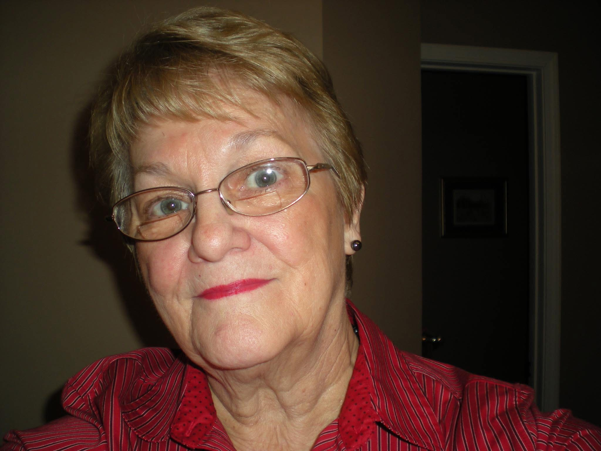
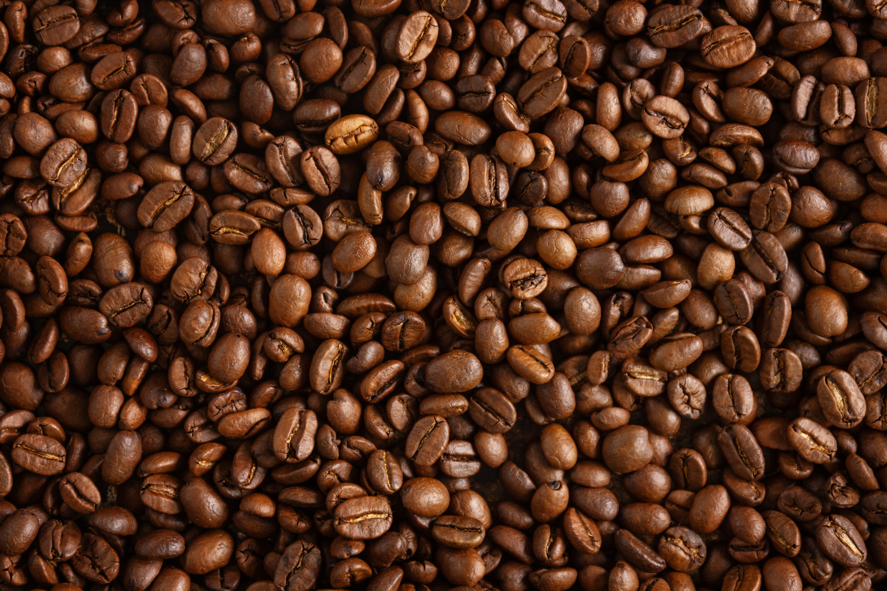
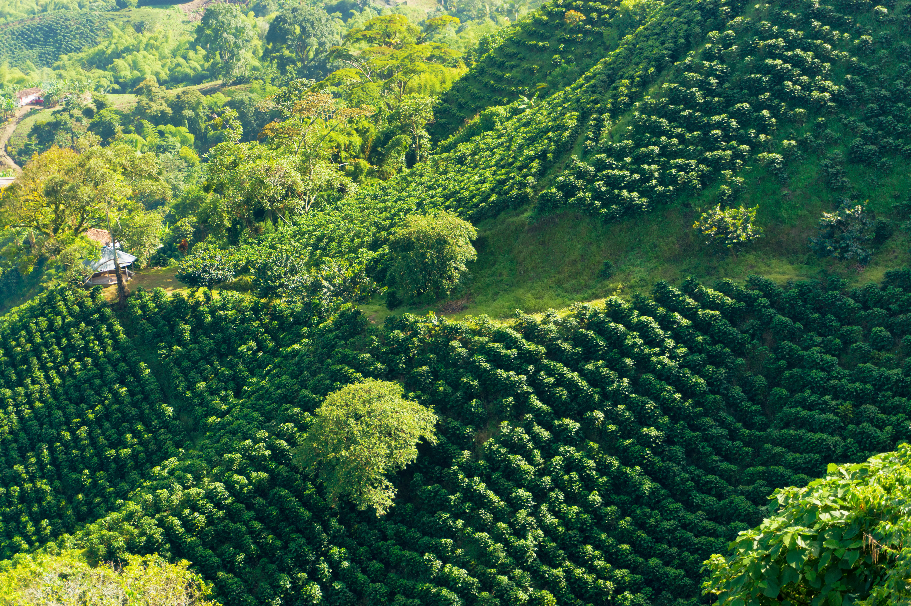
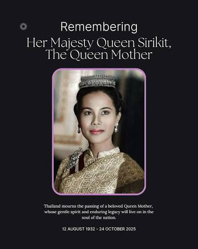

The Meaning Behind BAD
BAD stands for Barbara Ann Dalton, my mother’s initials. She had a tremendous impact on my life, and I chose those three letters out of love and respect for her. Using her initials is my way of honoring her and carrying that connection into something I’m building.

Why Coffee?
I’ve always loved the smell of coffee, but the taste didn’t always live up to the aroma. Too often, the coffees I bought were bitter, harsh, or simply unenjoyable. That disappointment made me curious: what does it take to make a cup of coffee that tastes as inviting as it smells? I began learning about roasting and how each step affects what ends up in the cup. That curiosity became the starting point for this business.

Always Looking to Improve
My background in professional kitchens shaped my love of experimenting with food and flavors. I bring that same curiosity to coffee—roasting, tasting, adjusting, and learning. My goal is to keep improving and create coffee with an inviting aroma and a flavor you want to come back to.
Why Thailand?
Thailand became part of my story during a difficult chapter in my life. I began helping a young student named Bowie continue her education, and over time, the connection between her, her mother, and me grew into family. What began as helping someone else brought love and renewed purpose into my own life.
That connection is why I chose Thailand as the inspiration for the coffee business. It brings together my love of coffee and cooking with the people who mean so much to me—and my hope of building a future together there.

In Remembrance

Giving Back
Helping Bowie continue her education showed me how much supporting one child can mean. That experience inspired me to make giving back part of BAD Coffee Roasting Company’s purpose.
Our commitment is to donate 10% of our proceeds each month to support children’s education or a children’s charity. As the company grows, I want that growth to help create opportunities for children, too.